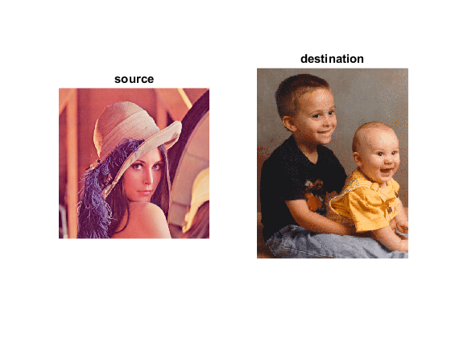
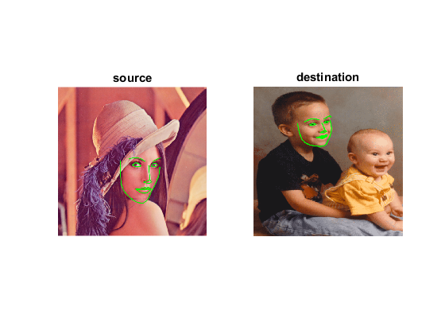
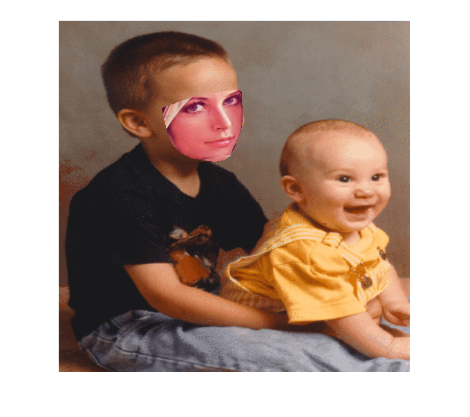

Face swapping using face landmark detection
This demo lets you swap a face in one image with another face in another image. It first detects faces in both images and finds its landmarks. Then it swaps the face in first image with in another image.
Sources:
Contents
Options
% [INPUT] path to the first/second images in which you want to apply face swapping im1 = fullfile(mexopencv.root(),'test','lena.jpg'); % source im2 = which('kids.tif'); % destination % [INPUT] path to binary file storing the trained model to load modelFile = fullfile(mexopencv.root(),'test','face_landmark_model.dat'); if exist(modelFile, 'file') ~= 2 % download model from GitHub disp('Downloading model (~ 69MB)...') url = 'https://cdn.rawgit.com/opencv/opencv_3rdparty/contrib_face_alignment_20170818/face_landmark_model.dat'; urlwrite(url, modelFile); end % [INPUT] path to the cascade xml file for the face detector xmlFace = fullfile(mexopencv.root(),'test','lbpcascade_frontalface.xml'); download_classifier_xml(xmlFace); % name of user-defined face detector function faceDetectFcn = 'myFaceDetector'; assert(exist([faceDetectFcn '.m'], 'file') == 2, 'missing face detect function');
Images
load and show images
img1 = cv.imread(im1); img2 = cv.imread(im2); subplot(121), imshow(img1), title('source') subplot(122), imshow(img2), title('destination')
resized images as it is easier to process small images, resized according to their actual ratio
ratio1 = size(img1,2) / size(img1,1); ratio2 = size(img2,2) / size(img2,1); img1 = cv.resize(img1, fix(640 * [ratio1, ratio1])); img2 = cv.resize(img2, fix(640 * [ratio2, ratio2]));
Init
create instance of the face landmark detection class, and set the face detector function, then load the pre-trained model
obj = cv.FacemarkKazemi(); obj.setFaceDetector(faceDetectFcn); obj.loadModel(modelFile);
Detect
detect faces in both images
faces1 = obj.getFaces(img1);
faces2 = obj.getFaces(img2);
assert(~isempty(faces1) && ~isempty(faces2), 'No faces found');in case of multiple detections, take the biggest face in each image
if numel(faces1) > 1 [~,ind] = max(cellfun(@cv.Rect.area, faces1)); faces1 = faces1(ind); end if numel(faces2) > 1 [~,ind] = max(cellfun(@cv.Rect.area, faces2)); faces2 = faces2(ind); end
detect landmarks in both images
shapes1 = obj.fit(img1, faces1);
shapes2 = obj.fit(img2, faces2);
assert(~isempty(shapes1) && ~isempty(shapes2), 'No landmarks found');
pts1 = shapes1{1};
pts2 = shapes2{1};show landmarks
figure subplot(121), imshow(drawLandmarks(img1, pts1)), title('source') subplot(122), imshow(drawLandmarks(img2, pts2)), title('destination')
Swap
First compute convex hull to find the boundary points of the face in the image which has to be swapped.
Next as we need to warp one face over the other, we need to find affine transform. To find affine transform in OpenCV, it requires three set of points to calculate the affine matrix. Also we just need to warp the face instead of the surrounding regions. Hence we divide the face into triangles so that each triangle can be easily warped onto the other image.
The function divideIntoTriangles divides the detected faces into triangles. The function warpTriangle then warps each triangle of one image to other image to swap the faces.
compute convex hull
indices = cv.convexHull(pts2, 'ReturnPoints',false);
pts1 = pts1(indices + 1);
pts2 = pts2(indices + 1);Triangulation for points on the convex hull
rect = [0, 0, size(img2,2), size(img2,1)]; triangles = divideIntoTriangles(rect, pts2);
Apply affine transformation to Delaunay triangles
img1 = single(img1); img1Warped = single(img2); for i=1:numel(triangles) % Get matching triangles points in img1 and img2 tr1 = pts1(triangles{i} + 1); tr2 = pts2(triangles{i} + 1); % warp tr1 in img1 into tr2 in img2 img1Warped = warpTriangle(img1, img1Warped, tr1, tr2); end img1Warped = uint8(img1Warped);
show result
figure, imshow(img1Warped)
Seamless cloning
Even after warping, the results somehow look unnatural. Hence to improve the results we apply seamless cloning to get the desired results as required.
create mask from convex hull
mask = zeros(rect(4), rect(3), 'uint8'); mask = cv.fillConvexPoly(mask, pts2, 'Color',255);
Clone seamlessly
r = cv.boundingRect(pts2); center = r(1:2) + r(3:4)/2; img1Warped = cv.seamlessClone(img1Warped, img2, mask, center, 'Method','NormalClone');
show result
figure, imshow(img1Warped)
Helper function
function download_classifier_xml(fname) if exist(fname, 'file') ~= 2 % attempt to download trained Haar/LBP/HOG classifier from Github url = 'https://cdn.rawgit.com/opencv/opencv/3.4.0/data/'; [~, f, ext] = fileparts(fname); if strncmpi(f, 'haarcascade_', length('haarcascade_')) url = [url, 'haarcascades/']; elseif strncmpi(f, 'lbpcascade_', length('lbpcascade_')) url = [url, 'lbpcascades/']; elseif strncmpi(f, 'hogcascade_', length('hogcascade_')) url = [url, 'hogcascades/']; else error('File not found'); end urlwrite([url f ext], fname); end end function img = drawLandmarks(img, pts, varargin) %DRAWLANDMARKS Draw facial landmark points % % img = drawLandmarks(img, pts) % img = drawLandmarks(img, pts, 'OptionName',optionValue, ...) % % ## Input % * __img__ input image % * __pts__ face landmarks (68 points) % % ## Output % * __img__ output image with drawn landmarks % % ## Options % Optional drawing params passed to cv.polylines function (color, % thickness, line type). % % The function assumes annotations following the Multi-PIE 68 points % mark-up, as described in: % [i-bug][https://ibug.doc.ic.ac.uk/resources/facial-point-annotations/]. % % For reference, see: % % ![image][https://ibug.doc.ic.ac.uk/media/uploads/images/annotpics/figure_68_markup.jpg] % % See also: cv.Facemark.drawFacemarks % % points %{ p1 = { pts(1:17), ... % chin pts(18:22), ... % left eyebrow pts(23:27), ... % right eyebrow pts(28:31) % nose top part }; p2 = { pts(31:36), ... % nose bottom part pts(37:42), ... % left eye pts(43:48), ... % right eye pts(49:60), ... % lips outer part pts(61:68) % lips inside part }; %} p1 = mat2cell(pts(1:31), 1, [17 5 5 4]); p2 = mat2cell(pts(31:end), 1, [6 6 6 12 8]); % draw polylines (p1: not closed, p2: closed) opts = {'Color',[0 255 0], 'Thickness',2, 'LineType','AA'}; opts = [opts varargin]; img = cv.polylines(img, p1, 'Closed',false, opts{:}); img = cv.polylines(img, p2, 'Closed',true, opts{:}); end function delaunayTri = divideIntoTriangles(rect, points) %DIVIDEINTOTRIANGLES Divide the face into triangles for warping % Create an instance of Subdiv2D, insert points, and get triangles subdiv = cv.Subdiv2D(rect); subdiv.insert(points); triangleList = subdiv.getTriangleList(); delaunayTri = {}; for i=1:numel(triangleList) % 3-points triangle tr = triangleList{i}; tr = {tr(1:2), tr(3:4), tr(5:6)}; % skip triangle if not all its points are within image ROI if all(cellfun(@(pt) cv.Rect.contains(rect, pt), tr)) % corresponding indices into convex hull points [~,ind] = cv.batchDistance(cat(1,tr{:}), cat(1,points{:}), ... 'NormType','L1', 'K',1); delaunayTri{end+1} = ind; end end end function img2 = warpTriangle(img1, img2, tr1, tr2) %WARPTRIANGLE Warp triangle1 in img1 into corresponding triangle2 in img2 rect1 = cv.boundingRect(tr1); rect2 = cv.boundingRect(tr2); % Offset points by left top corner of the respective rectangles tr1Rect = cellfun(@(pt) pt - rect1(1:2), tr1, 'UniformOutput',false); tr2Rect = cellfun(@(pt) pt - rect2(1:2), tr2, 'UniformOutput',false); % estimate transformation from source to destination triangles warp_mat = cv.getAffineTransform(tr1Rect, tr2Rect); % Apply transformation to small rectangular patch img1Rect = cv.Rect.crop(img1, rect1); img2Rect = cv.warpAffine(img1Rect, warp_mat, 'DSize',rect2(3:4), ... 'BorderType','Reflect101'); % Get mask by filling triangle mask = zeros([rect2([4 3]) 3], 'single'); mask = cv.fillConvexPoly(mask, tr2Rect, 'Color',[1 1 1], 'LineType','AA'); % cut out triangle and paste it on top of destination image img2Rect = cv.multiply(img2Rect, mask); img2 = cv.Rect.crop(img2, rect2, cv.multiply(cv.Rect.crop(img2, rect2), 1 - mask)); img2 = cv.Rect.crop(img2, rect2, cv.Rect.crop(img2, rect2) + img2Rect); end % The facemark API provides the functionality to the user to use their own % face detector. The code below implements a sample face detector. This % function must be saved in its own M-function to be used by the facemark API. function faces = myFaceDetector(img) persistent obj if isempty(obj) obj = cv.CascadeClassifier(); obj.load(xmlFace); end if size(img,3) > 1 gray = cv.cvtColor(img, 'RGB2GRAY'); else gray = img; end gray = cv.equalizeHist(gray); faces = obj.detect(gray, 'ScaleFactor',1.4, 'MinNeighbors',2, ... 'ScaleImage',true, 'MinSize',[30 30]); end